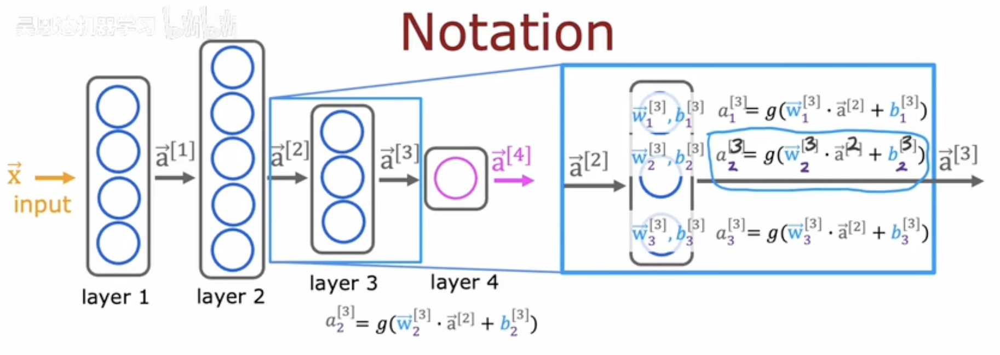
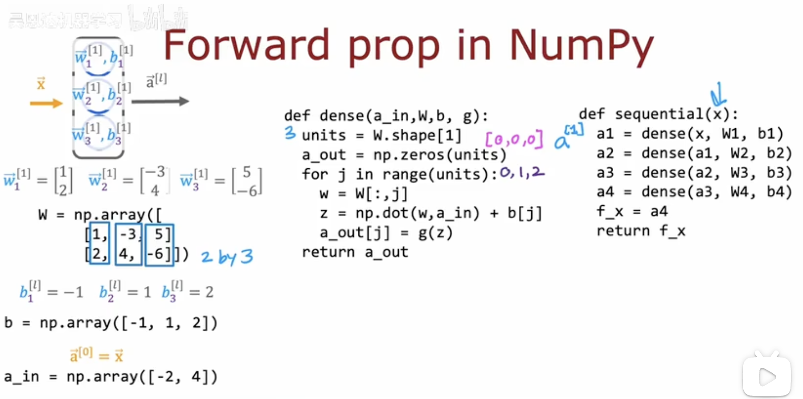
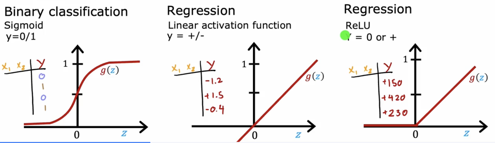
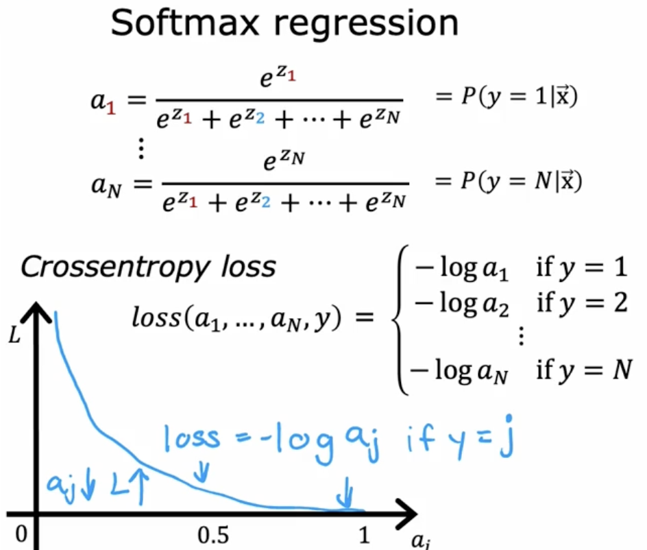
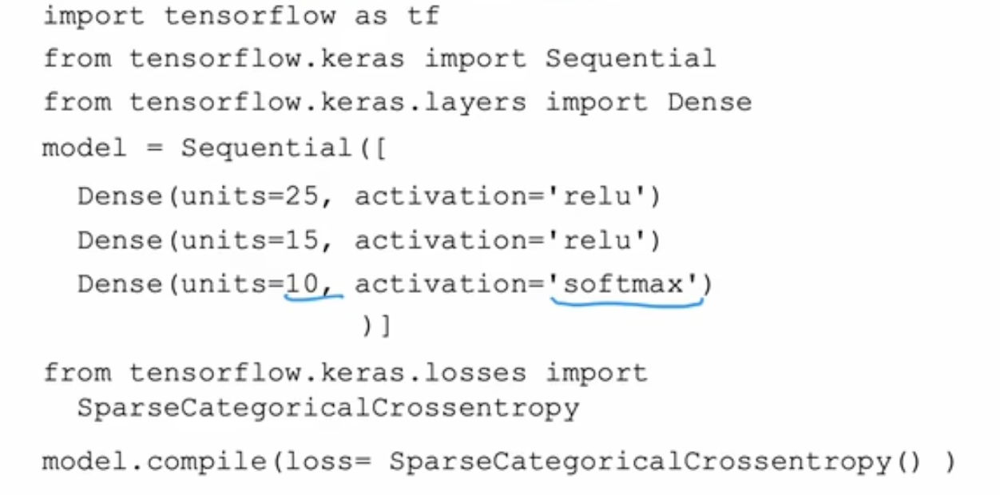
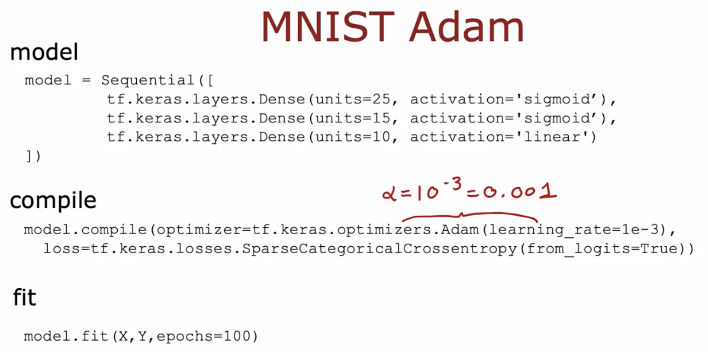
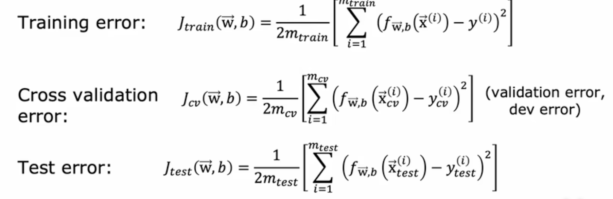

神经网络与机器学习的最大区别
神经网络不需要人工提取特征，而是通过神经网络自动提取特征
神经网络的层框架
输入层，隐藏层，输出层
tensorflow和numpy的使用
tensorflow是深度学习框架，numpy是科学计算库，二者可以结合使用
tensorflow的使用
1import tensorflow as tf
2import numpy as np
3
4# 创建矩阵
5a = tf.Tensor([[1,2,3,4,5,6],[1,2,3,4,5,6]], shape=(1,3), dtype=float32)
6
7# 转成numpy
8a = a.numpy()
numpy的使用
1import numpy as np
2
3# 创建一个数组
4a = np.array([1,2,3,4,5,6])
5b = np.array([1,2,3,4,5,6])
6c = a + b
7
8# 矩阵
9a = np.array([[1,2,3,4,5,6],[1,2,3,4,5,6]])
10b = np.array([[1,2,3,4,5,6],[1,2,3,4,5,6]])
11c = a + b
12
13# 打印数组
14print(c)
python中矩阵的常用操作（会持续更新）
1import numpy as np
2
3# 矩阵乘法
4a = np.array([[1,2,3,4,5,6],[1,2,3,4,5,6]])
5b = np.array([[1,2,3,4,5,6],[1,2,3,4,5,6]])
6c = np.dot(a, b)
7
8# 转秩
9a = a.T
10
11# 打印数组
12print(c)
利用tensorFlow构建神经网络
1import tensorflow as tf
2import numpy as np
3
4# 创建各个层
5x = np. array([[200.0, 17.0],
6 [300.0, 23.0],
7 [400.0, 31.0],
8 [500.0, 45.0],
9 [600.0, 53.0],
10 [700.0, 57.0],
11 [800.0, 60.0]])
12y = np.array([[1.0],
13 [2.0],
14 [3.0],
15 [4.0],
16 [5.0],
17 [6.0],
18 [7.0]])
19
20layer_1 = Dense(units=3, activation="sigmoid")
21a1 = layer_1(x)
22layer_2 = Dense(units=1, activation="sigmoid")
23a2 = layer_2(a1)
24
25# 连接成神经网络
26model = sequential([layer_1, layer_2])
27
28# 训练神经网络
29model.compile(optimizer="adam", loss="mse")
30model.fit(x, y, epochs=1000)
前向传播在numpy的实现
激活函数
激活函数的作用是引入非线性因素，使得神经网络可以逼近任何非线性函数
常用的激活函数有：sigmoid，relu，Linear activation function
适用范围如图所示，sigmod用于二元，线性用于有正有负，relu用于正数。
激活函数的选择
relu函数在深度学习中使用最多，因为其计算简单，且不会出现梯度消失的问题（梯度消失问题是指在反向传播过程中，梯度在经过多层神经网络后逐渐趋近于0，导致网络无法学习或者学习缓慢），但是对于二元分类问题，还是用sigmoid函数比较好。
为什么需要激活函数
因为神经网络中的神经元是线性的，如果不用激活函数，那么无论神经网络有多少层，其输出都是线性的，无法逼近非线性函数。
softmax回归算法
softmax回归算法用于多分类问题，其输出是各个类别的概率分布，且概率之和为1。
公式：
损失函数
softmax回归算法的损失函数 
tensorflow实现softmax回归算法
不推荐使用tensorflow实现softmax回归算法 
因为tensorflow已经封装好了softmax回归算法，可以直接使用。
1model.compile(loss = BinaryCrossentropy(from_logits = True))
注意这样子的话如果设置 from_logits=true，输出层应该设置为线性激活函数，这样子神经网络训练出来的结果就是z的数值，随后，需要调用f_x = tf.nn.softmax (logits)，将结果转换为a（概率值）
这样操作的目的是，由于计算机本身计算的精度有限，有些时候如果先存储结果再计算会导致精度损失，如果按照原本的方法，先计算了sigmoid函数的结果，再用那个函数的结果，计算损失函数，就会损失精度，因此直接在损失函数内部计算，避免精度损失，这个 from_logits=true 就是告诉损失函数，我给你的结果还没有经过 sigmoid 函数，你帮我计算一下损失函数。
我懂了，原来是这样，首先，先说明原来的方法弊端是什么，由于计算机本身计算的精度有限，有些时候如果先存储结果再计算会导致精度损失，如果按照原本的方法，先计算了sigmoid函数的结果，再用那个函数的结果，计算损失函数，就会损失精度，使用from_logits=true和线性激活函数，相当于只对z进行预测，输出的结果就是z，所以神经网络计算的结果其实是z，然后，在预测阶段，我们不可能直接使用z，因为我们需要的是一个概率值，所以，我们需要使用f_x = tf.nn.softmax (logits)，将结果转换为a（概率值），这样，我们就可以得到一个概率值，然后，我们就可以使用这个概率值进行预测了。
其实以后都可以按这个来，因为更加精确。
Adam算法
优化梯度下降学习率的算法，是梯度下降的一点改进，按照下面的代码自动调用即可
代码如下
模型优化
对于一个简单的预测模型，我们无法确定他的预测的结果是好还是坏，所以我们需要一个评价的标准。
JTest
JTest最简单的方式就是将原始数据三七分成，三成是测试集，七成是训练集，将训练集的数据用于训练，测试集的数据输入到模型中，得到预测结果，然后与实际结果进行对比，得到一个误差，这个误差就是JTest。但是这样子做也是有缺陷的，如果我们使用测试集的数据进行验证，测试集在某种程度上也成了模型训练过程的一部分（测试集原本的作用是测试模型的泛化能力），这可能导致模型对测试集过拟合，导致评价的结果可能表现不佳。
为了解决这个问题，交叉验证的方法被提了出来，按照622的比例分别作为训练集，交叉验证集，测试集。
用六成数据训练，交叉验证集数据用于选择参数，测试集数据用于测试模型的泛化能力。这样子测试集的Cost函数就可以更好地反映模型的泛化能力。
方差和偏差
方差和偏差是衡量模型预测结果与实际结果之间的差距，偏差是指模型预测结果与实际结果之间的差距，方差是指模型预测结果之间的差距。高方差往往代表过拟合，高偏差往往代表欠拟合。